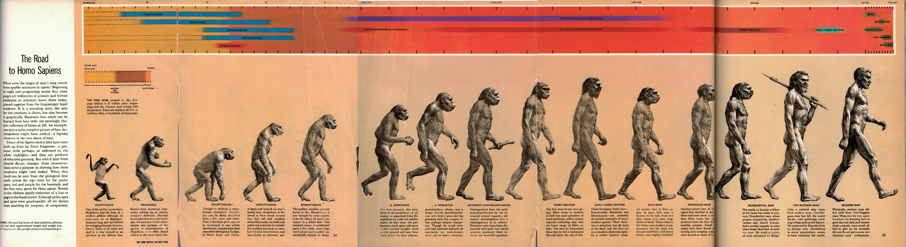
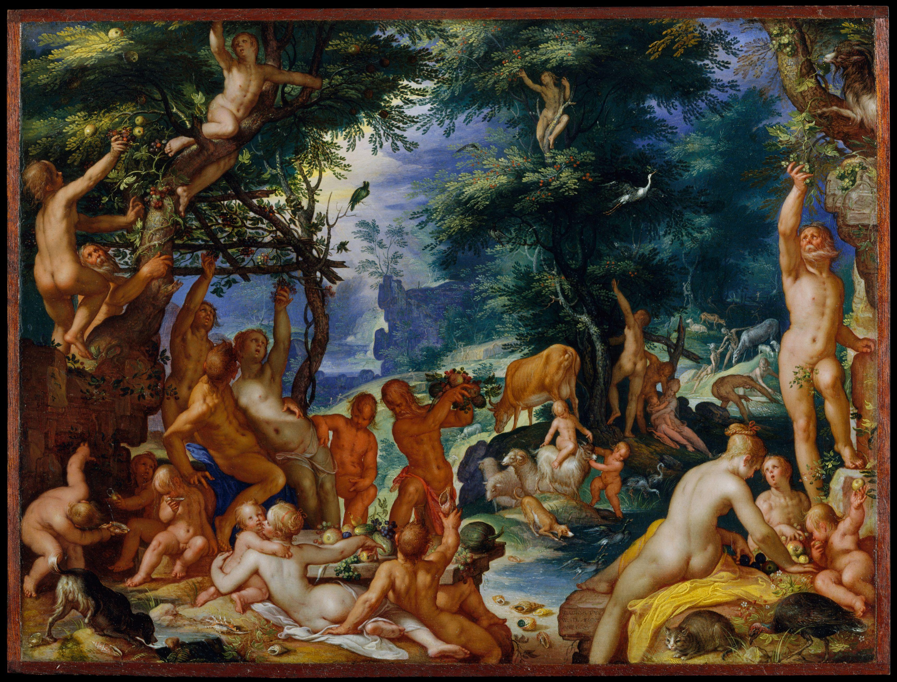
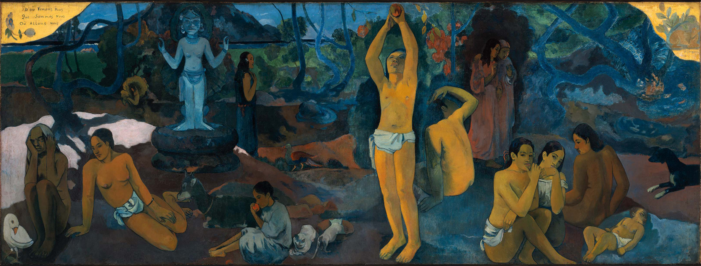
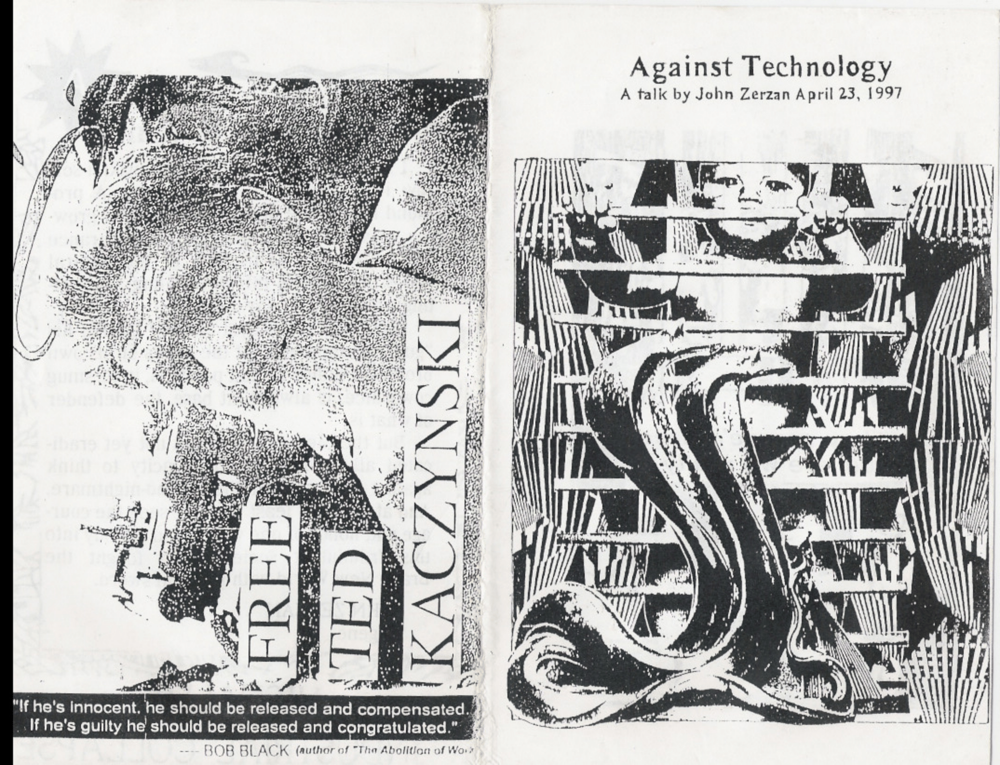

The Linear Narrative of Paleo Primitivism

Zallinger, R. (1965). The March of Progress [illustration]. Reproduced in Howell, F. (1965) Life Nature Library: Early Man (pp. 41-45)Since its creation, The March of Progress has been widely circulated and parodied (Shelley, 1996). The illustration shows 15 figures, representing the history of human evolution in a line from left to right. As discussed by Shelley (1996), the subjects move rightward and become increasingly upright, visually arguing that evolution is progressive and culminates with the modern human. The positive evolutionary trend might seem directly opposed to a utopian view of our ancestors, but the progressivism exemplified by The March of Progress is foundational to the linear and purposeful view of evolution at the core of primitivism, merely reversed. That is, primitivist viewpoints like the Paleo movement advocate for a return to an earlier state, claiming evolution has been a descent, rather than the ascent outlined in The March of Progress. (Johnson, 2016) Either direction—rise or decline—is linear.
Graeber and Wengrow (2021) argue that viewing the Paleolithic as a utopian golden age ended by the Agricultural Revolution is a mistake. Simplifying human history into a story of progression or regression misrepresents the complexity of societies throughout time.

Wtewael, J. (1605). The Golden Age [painting]. The Met Fifth Avenue, New York, NY, United States. https://www.metmuseum.org/art/collection/search/437955Based on Ovid’s Metamorphoses, Wtewael’s The Golden Age portrays a bygone utopian age. In the image, people (all with fair skin and hair) live in harmony with nature and animals, enjoying plentiful fresh fruits. The absence of technology, processed food, or significant clothing suggests that the past was a primitivist utopia.
As discussed by Dein (2022), “Ovid in his Metamorphoses (8AD) writes of a golden age where humans only ate vegetarian foods and there was an emphasis on gathering plentiful produce without cultivation.” (para 3) Similarly, Paleo followers believe people were healthier during the Paleolithic due to an evolutionary mismatch between our ancient genetics and modern lifestyles, including diet. Paleo diet is a form of utopianism, a reflection “of the quest for health and the inevitability of our mortality, of the desire to escape time and our certain incorporation into its currents.” (Johnson 2015)

Gauguin, P. (1897–98). Where Do We Come From? What Are We? Where Are We Going? [painting]. Museum of Fine Arts, Boston, MA, United States. https://collections.mfa.org/objects/32558/where-do-we-come-from-what-are-we-where-are-we-goingAlthough stylistically different, Gaugin’s Where Do We Come From? What Are We? Where Are We Going? parallels the subject and composition of The Golden Age. Gauguin uses vivid colors and nature imagery to portray Tahitians laying outside and eating fruit. As per Staszak (2004), the painting takes part in a larger Primitivism art aesthetic to depict a “primitive” utopia. Gaugin viewed his journey to Tahiti as a quest to find an exotic and primitive way of life. Rather than an earnest representation of the country, Gaugin’s Tahiti resembles a primitivist utopia like the biblical garden of Eden or the Greek Golden Age. The scene invokes Jean-Jacques Rousseau’s state of nature: that we were hunter-gatherers in a state of innocence before civilization brought decline. (Graeber & Wengrow, 2021)
According to Dein (2022), although modern hunter-gatherers are used as proxies for Paleolithic diet and lifestyle, this comparison is flawed. Extant hunter-gatherers are influenced by contact with developed society. Furthermore, diet exists on a wide spectrum across the word, varying based on availability. According to Weedon and Patchin, (2022) the representation of hunter-gatherers as Paleolithic proxies is used by Paleo dieters to “advocate the exclusion of agricultural foods,” (pg. 733) and the language used to describe hunter-gather groups and their bodies reflects a history of colonialism. A Paleo diet based on hunter-gatherers from any era cannot encompass the reality of dietary diversity. Instead, Paleo is based on a manufactured ideal that condenses human experience into a linear narrative.

Anti-Authoritarians Anonymous (1997). [Against Technology zine cover]. Reproduced in Zerzan, J. (1997). Against Technology (outer cover)The zine Against Technology was based on a talk by anarcho-primitivist John Zerzan, likely published by Anti-Authoritarians Anonymous in Eugene, Oregon. On the left, the back cover of the zine reads “FREE TED KACZYNSKI” alongside a photo of Ted Kaczynski with a halo. This clearly demonstrates support for the primitivist domestic terrorist Ted Kaczynski and portrays him as a martyr. The front cover shows a baby locked behind bars and guarded by snakes, likely symbolizing technology as a cage for society. Although Zerzan’s primitivism is a far cry from common Paleo views, both argue for a return to an earlier, more primitive, state . Just as Paleo advocates believe that modern lifestyles and industrial foods cause diseases of civilization (Dein, 2022), Zerzan views technology itself as a societal evil.
According to Zerzan, “[…] increasingly people are coming to understand that life before agriculture and domestication […] was in fact largely one of leisure, intimacy with nature, sensual wisdom, sexual equality, and health.” (Dein, 2022) In order to restore this primitive life, Zerzan supports Ted Kaczynski’s aggressive re-wilding: returning the world to a pre-technological state through violence. Likewise, according to Leiper (2019), Paleo followers perform “dietary and behavioral re-wilding,” (pg. 122) attempting to return their bodies to a natural state. Johnson (2015) claims that Paleo serves as “a manual for the body, the self, and society.” (p. 102) The Paleo movement is an “embodied utopia” (pg. 103) that uses the past to influence how people eat and live in the present and future, “a seemingly paradoxical fusion of “natural,” holistic, “ancient,” or unconventional approaches with the highly quantified, clinical approaches of emerging health sciences.” (Leiper, 2019, pg. 128)
The Paleo trend takes place within the larger cultural context of primitivism. By arguing for a return to a past lifestyle, Paleo diets are both “myths of a lost golden age and utopian manuals for better bodies and a more perfect world.” (Johnson, 2015, pg. 101) However, the Paleo myth relies on a reductive view of our past. Every aspect of culture, from social organization to diet, has a complex and winding history that cannot be fit into a linear narrative.
References
Dein, S. (2022). The myth of the golden past: Critical perspectives on the paleo diet. Anthropology of Food. https://journals.openedition.org/aof/13805
Graeber, D., & Wengrow, D. (2021). The Dawn of Everything: A New History of Humanity. New York: Farrar, Straus and Giroux
Johnson, A. R. (2015). The Paleo Diet and the American Weight Loss Utopia, 1975–2014. Utopian Studies, 26(1), 101–124. https://doi.org/10.5325/utopianstudies.26.1.0101
Johnson, A. R. (2016). Paleo Diets and Utopian Dreams. Skeptic Magazine, 21(3). https://media.journoportfolio.com/users/61209/uploads/60a0e571-74f2-4d80-bf0c-32c06b97dc7d.pdf
Leiper, C. (2019, October). The Paleo paradox: Re-wilding as a health strategy across scales in the anthropocene. Geoforum 105 122–130. https://doi.org/10.1016/j.geoforum.2019.05.015
Morris, I. (2022). Against Method. American Journal of Archaeology, 126(3), E65–E75. https://doi.org/10.1086/720603
Shelley, C. (1996). Rhetorical and demonstrative modes of visual argument: Looking at images of human evolution. Argumentation and Advocacy, 33(2), 53-68. https://doi.org/10.1080/00028533.1996.11977996
Staszak, JF. (2004). Primitivism and the other. History of art and cultural geography. GeoJournal, 60(4), 353-364. https://doi.org/10.1023/B:GEJO.0000042971.07094.20
Weedon, G., & Patchin, P. M. (2022). The Paleolithic imagination: Nature, science, and race in Anthropocene fitness cultures. Environment and Planning E: Nature and Space, 5(2), 719-739. https://doi.org/10.1177/25148486211004365